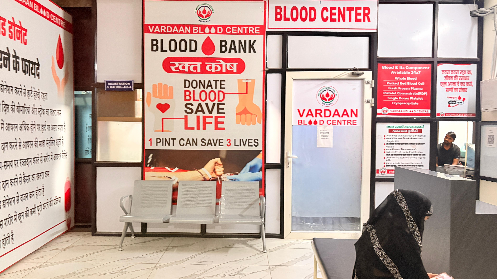

🎨 The Preparation
Crafting the Message
Instead of relying on digital printouts, I spent hours crafting a handmade awareness poster titled "A Simple Drop, A Massive Hope".
To make future interactions engaging, I designed an interactive Doctor/Nurse Photobooth Prop. This completely changed how people interacted with the cause!


🏥 The Execution
Field Survey & Outreach
Equipped with my handmade props, I hit the ground to understand the local blood donation ecosystem. I visited Vardaan Blood Centre in Indu Hospital.
